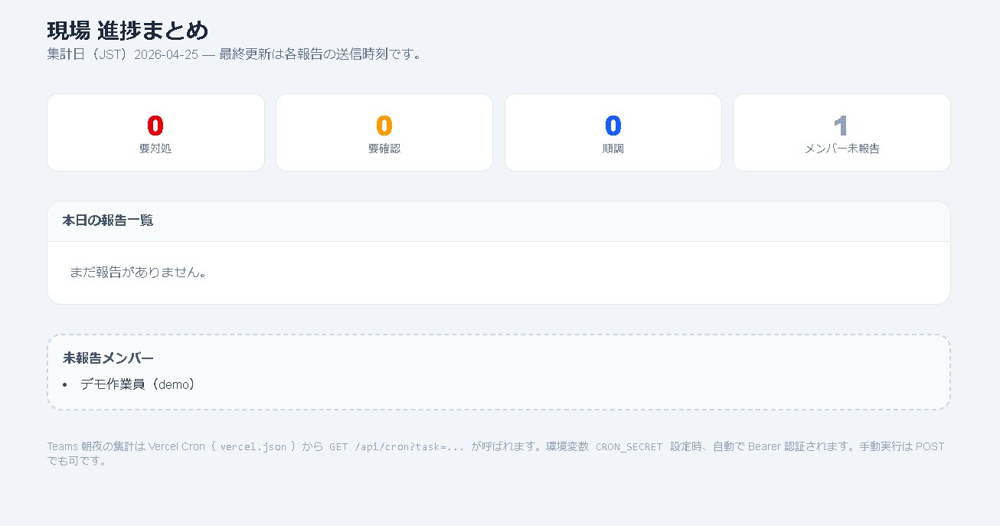

1. 報告ツールの画面キャプチャ
開発環境またはデプロイ先でログイン後、進捗報告フォーム（/report）を表示した状態で撮影してください。同フォルダにファイル名 report-screen.png
で保存すると、自動的にここに表示されます。

画像 report-screen.png をこのページと同じフォルダ（submiss）に置いて再読み込みしてください。
2. フォーム入力の論理構成（4つのパーツ）
| ブロック | 内容・ねらい |
|---|---|
| 1. 現場・場所 | 現場名・階（必須）と作業範囲（任意）。「どこで」を先に決め、階リストを現場と連動させることで入力ミスを減らす。 |
| 2. 作業・予定 | 当日の作業内容と明日の作業（ともに必須）。AIチェック対象となる旨を画面上で明示し、日本語・伝わりやすさを意識して記入してもらう。 |
| 3. 負荷・スケジュール感 | 「2日以内に次の仕事があるか」「余力があるか」をラジオで取得。人手・日程の調整に使えるフラットな情報にする。 |
| 4. 振り返り・リスク | 気づき・コメントに加え、「問題あり／なし」をトグルとし、ある場合のみ詳細を入力。異常だけを取りこぼしにくくする。 |
3. ロールとアクセス制御（ミドルウェア）
| ロール | 主なパス | 概要 |
|---|---|---|
| MEMBER | /report |
JWT クッキー（セッション）がない場合はログインへリダイレクト。同一ユーザー・同一日は DB で upsert し、「何度も送信して上書き」できる。 |
| ADMIN | /admin など |
管理者のみ。middleware.ts でロール確認し、未ログインまたは非 ADMIN はログインへ返す。 |
セキュリティ要件としては JWT_SECRET を十分な長さ（32 文字以上など）で設定する前提となる。
4. 報告送信の処理フロー（概略）
送信ボタン押下後、サーバー側の submitReport（Server Actions）から、おおむね次の順に処理される。
submitReport（入力検証・Zod）Teams 側の HTTP ステータスや要約文言を画面へ返しており、「保存はできたが通知だけ失敗」といった状態も利用者から追いやすい。
5. 外部連携・データ保存
- PostgreSQL（Prisma） — ユーザー、現場／階マスタ、日次報告データの保存。
- OpenAI / Anthropic（
lib/ai） — 送信時に日本語と「同現場担当への伝わりやすさ」を短いフィードバックとして返す。 - Teams Webhook（
lib/teams） — 現場名・進捗要約などを自動投稿し、ログの運用にも耐える体裁にしている。
6. 工夫したポイント
Teams との連携を実装する過程で、アプリから Webhook で送るだけでなく、運用として Power Automate でフローを組む必要があり、テナントやコネクタの扱いなど設定に戸惑う箇所が多く、試行錯誤に想定以上の時間を要しました。
また、利用する機能やテナントの契約内容によっては ライセンスや利用権限 が前提となり、学校・個人環境では制約に当たることがある点も、事前に把握しておくべき課題だと感じました。ドキュメントやサンプルフローを確認しながら段階的に切り分けることで、最終的には通知まで到達させることができました。